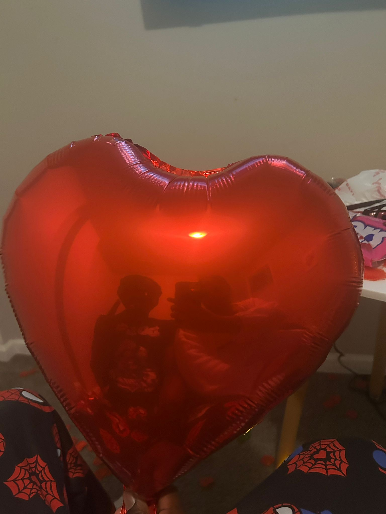
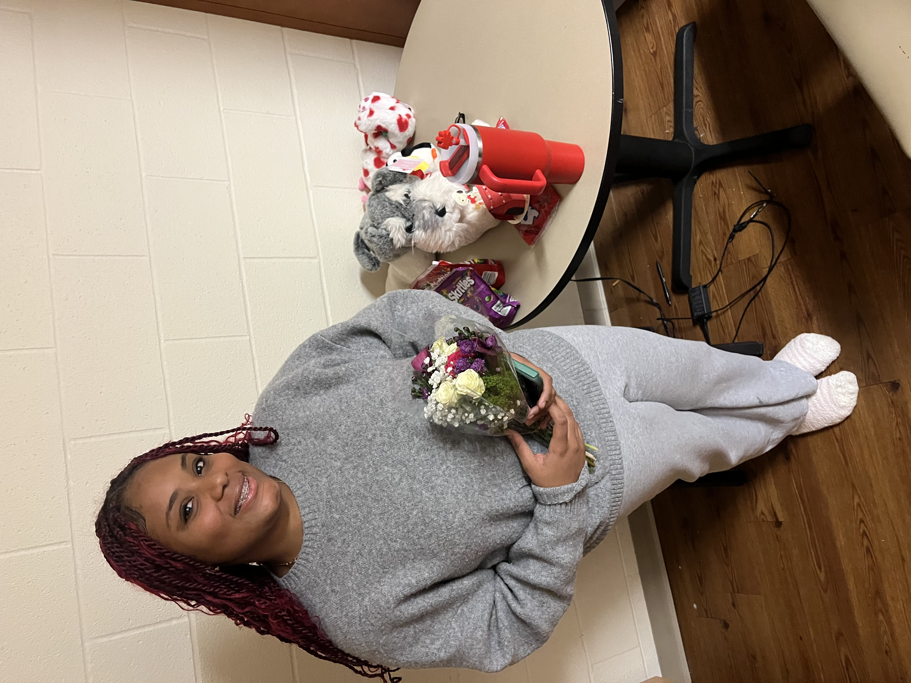
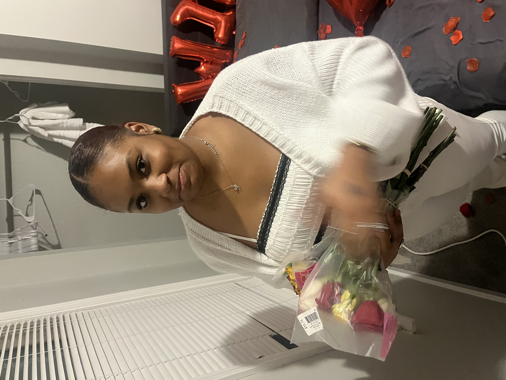
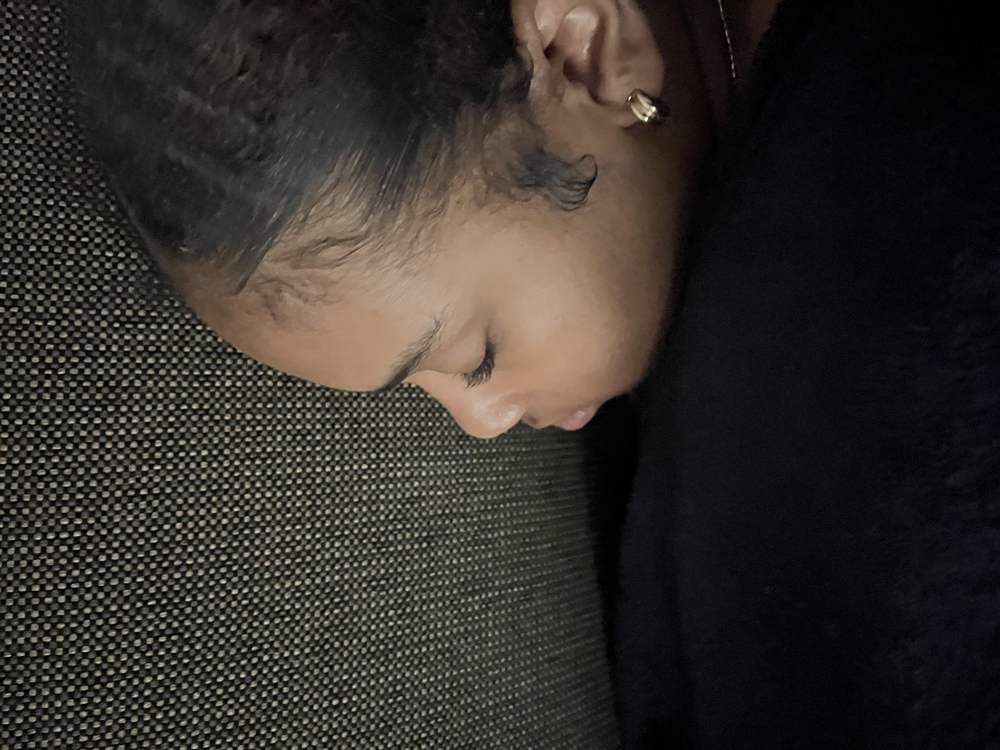

My Last Hail Mary Before I Retire
It’s now been about 24 ish hours since we last spoke, which is when I decided to end things between us because I felt as if I cared about you so much that I didn’t deserve to be with a girl as Indescribable as you are. I now realize that may have been single-handedly one of the most foolish decisions that I ever made.
Although I agree with the reasoning behind what I did, I do not agree with the execution. I spent an entire week trying to figure out the best case of action. I originally thought that it was selfish to keep dating you although I did not provide you with the reassurance and confirmation that you deserved to know that I shared deep feelings with you every day, but now reflecting on the situation, it may have been even more selfish to decide the fate of our relationship for myself without even giving it another chance to make the necessary changes and make you happy again.
As you probably know by now, I have experience in many things, and dating is not one of them, and it showed Saturday night. For that I sincerely apologize for any amounts of pain, sorrow, or hurt I may have caused, because believe me I myself am deeply distraught and felt that way the minute I got into my car to drive home.
I hope you can find it in your heart if not now, but sometime later in life to forgive me, because at the time I truly thought it was the morally right decision.
Now onto the whole purpose of this, ever since we stopped talking I heavily reflected on our last conversation and although I remember every second of it one particular phrase has been playing an endless loop in my head. You said, “You could’ve been the groom.”
To be truthful, before you said that I have definitely thought about us in the long term, but the distance has now almost forced me to think so much more deeper, and reflect on what could've been, and what perhaps what can be.
Picturing our life together has provided me with serenity in an overwhelming storm that was the breakup, as I can picture us in a beautiful home with about 2-3 kids living our busy lives, but still finding a way to spend time with each other and enjoy each other’s company.
I can only imagine going on very expensive dates, vacations, trips and sidequests with someone who is not only the most beautiful but also the most hardworking, compassionate, caring, inspiring, and brilliant girl I have been granted the opportunity to cross paths with.
I now imagine the dream life with the dream girl, and honestly, I would be a fool to let someone like you go without at least knowing I did everything in my power to try and get her back.
So this is it. I, Joel, am asking you if you have it in your heart to please take me back as your boyfriend, as being with you makes me the happiest man on this planet.
I promise that I will do everything in my God-given ability to make you feel like not only the only girl I am talking to, but also the most beautiful and intelligent one.I will grant you with all of the reassurance that you will ever ask for, because I am willing to do anything to keep being your boyfriend
As much as I wish you can easily say yes and we can be back together, I know in my heart that it is not that easy. I have caused you great amounts of pain and I am fully aware of that, which is why I know this is not an easy decision.
You can take as much time as you want to think about this, and I will be here waiting patiently upon your response. There is no pressure at all, so please do what you feel as if is best for you.
If the answer is yes, I pray that God will grant us a relationship absent of any tribulations like this one, and that we can both build a future by each other’s side.
In contrary, if you say no I will wholeheartedly understand and take the punch like a man.
I just want to say, if this is my last time speaking like this, I meant everything I said. You were a blessing in my life, and I will never forget you.
Thank you for reading this. I am so so proud of everything you are doing, and will do, and I will always be one of your biggest supporters, even if its now from a distance.
FYI. Yes I know that I could've taken the ordinary approach and just sent you this, but you know ordinary has never really been my thing.

Literally Only Pic Together. Peak Soft Launch Tho

Asking to be your Valentine

Best day of 2026 by Far. So Cute

You are So Beautiful When You Are Sleeping